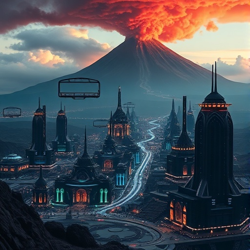
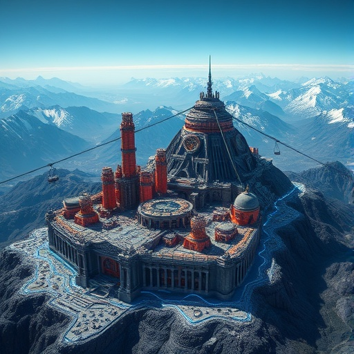
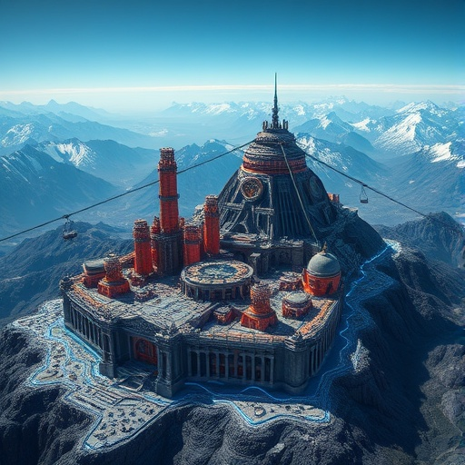
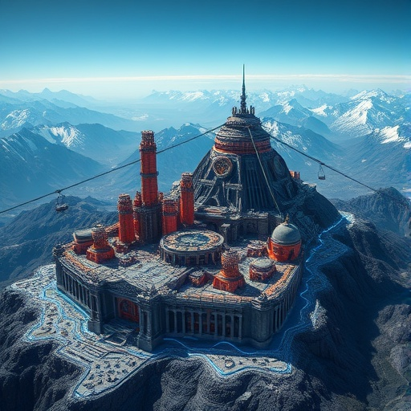

불의 영역: 이그니스 여신의 왕국
I. 통치와 사회 구조
재정일치 사회국가: 이그니스 여신을 중심으로 하는 종교단체의 신성 거부권(48% 지분)과 초거대기업 노바코퍼리카(Novacorporica)의 행정이 결합된 체제입니다. 시민의 복지는 배당금에 종속되어 있으며, 주가 폭락은 곧 사회 붕괴를 의미합니다.
II. 지형과 중앙 도시
순환의 고원 (중앙 도시): $3,000\text{m} \sim 4,000\text{m}$ 고원의 **지상 산악 대도시**입니다. 극히 희귀한 '열기 포식자'의 기술을 모방한 **중앙 냉각 시스템**으로 고열과 유독 가스를 제어합니다. 건축물은 대부분 **벽돌/콘크리트**이며, 주요 시설만 흑요석으로 지어졌습니다.
격리 구역 알파: '아황토 칼데라'에 위치하며, **열기 광증 (Pyrogenesis)** 바이러스와 고농도 독성 가스로 인해 완전히 봉쇄된 역병지대입니다. (N.A.Q.D. Lab 위치)
III. 핵심 산업 및 관광
핵심 산업: 지열 에너지 생산, 특수 운송/방어 기술, 유황 화학 정제입니다.
극한 관광업: 종교와 무관하게 **기업의 이익 창출 및 휴식**을 목적으로 합니다. **'격정 스펙트럼 온천'**과 마그마 관측소 투어가 주를 이루며, **열광주**가 고급 기념품으로 판매됩니다.
IV. 토착 생물 (유기적 자원)
- **유황 균류:** 화산 가스로 화학합성 (생명공학 효소).
- **자화 선인장:** 중금속 흡수 및 저장 (자기 센서 원료).
- **갑옷 두꺼비:** 유황 가스 정화 능력 (해독 약품).
- **황철석 벌레:** 독성 광물을 먹고 고순도 철산화물 축적 (채굴 자원).

 

